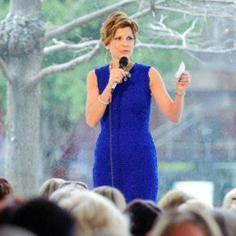

Dawn Mellon was busy. Very busy. She had a husband, two children, a fast-paced career and busy social life when her doctor diagnosed her with a very aggressive form of non-Hodgkin’s lymphoma. Just like that, life changed. Dawn likes to say that she went from a full- time fashion stylist to a full-time cancer patient. After 100 hours of chemotherapy, two biopsies, multiple procedures, and the loss and return of her hair; Dawn Mellon is in remission. Her cancer journey was mentally, physically and emotionally difficult but she never lost sight of the beauty of others. She frequently credits her family and friends for being her inspiration to continue her fight when it appeared impossible. Dawn says that cancer gave her the opportunity to see the very best in others as they rallied to bring over home cooked meals, drove her daughter to dance class, sat with her during treatment and sent notes of encouragement. Now she is using her experience and connections to raise awareness of blood cancers and the assistance The Leukemia & Lymphoma Society provides.